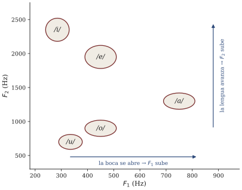

La voz cantada: fuente y filtro
Sesión 13 · Curso Acústica Musical UC Objetivos que cubre: OA1.3 (mecanismo de excitación cantada; cierre de la trilogía de válvulas del bloque C). Transversal: OA4.1 (el espectrograma de la propia voz). Apunte breve, a propósito: la sesión dedicó su primer módulo a la Prueba 2 y solo el segundo a la voz — el único espacio del curso para este instrumento (decisión de diseño declarada en la estructura del curso).
¿Qué afina usted cuando canta una vocal?
El ticket de la sesión 12 preguntaba si al cantar una vocal usted afina la “cuerda” o el “tubo”. El gancho de la sesión dio la respuesta en dos gestos: la misma nota puede llevar cualquier vocal, y la misma vocal puede vivir en cualquier nota. Son dos perillas independientes, y la física de la voz es la historia de esa independencia.
Las perillas tienen nombre. La primera es la fuente: los pliegues vocales — dos labios de músculo y mucosa en la laringe que, juntos y atravesados por el aire de los pulmones, oscilan cerrándose y abriéndose cientos de veces por segundo. Cada apertura deja escapar un soplido: el flujo continuo queda cortado en porciones periódicas. Usted reconoce el patrón: es la tercera válvula del curso, tras la fricción que pega y suelta (s11) y el chorro que entra y sale del bisel (s12). El zumbido glotal que producen es espectralmente rico — una fundamental f_0 y su serie de armónicos — y musicalmente crudo: todavía no es ni una /a/ ni una /o/.
La segunda perilla es el filtro: el tracto vocal, el tubo blando que va de la laringe a los labios (unos 17 cm en el adulto — valor estándar de la literatura fonética, cercano al promedio de la voz masculina adulta; la voz femenina adulta promedia unos 14–15 cm). Como toda columna de aire — sesión 10 y 12 — tiene resonancias; pero a diferencia del PVC del taller, este tubo cambia de forma a voluntad: lengua, mandíbula y labios lo estrechan y ensanchan por tramos. Sus resonancias se llaman formantes (F1, F2, …), y hacen de filtro: refuerzan los armónicos de la fuente que caen cerca de ellas y desatienden el resto.
La sorpresa: esta válvula no obedece al resonador
En el violín y en la flauta, el resonador gobierna a la válvula: la cuerda le impone su período a la fricción, la columna al chorro. Por eso allá la afinación es del resonador y no del gesto (apretar el arco no sube la nota; soplar más fuerte no la sube de a poco).
En la voz el reparto es otro, y es la clave de todo: los pliegues fijan su frecuencia solos, con su tensión y su masa — el músculo los afina como se afina una cuerda con la clavija —, y el tracto se limita a filtrar lo que le llega, casi sin devolverle órdenes a la fuente (Benade 1990, secs. 19.1–19.2). Fuente y filtro quedan así desacoplados: f_0 — la altura — se decide en la laringe; el patrón de formantes — la vocal, buena parte del timbre — se decide en la boca. Por eso, y solo por eso, usted puede cantar cualquier vocal en cualquier nota: el modelo fuente-filtro (figura 1), la pieza central de la acústica de la voz.

La vocal es un lugar en el mapa de formantes
En el espectrograma proyectado, la sesión lo mostró en vivo: al cantar una nota fija y cambiar de vocal, las líneas armónicas (la fuente) no se mueven — se mueven las bandas oscuras de refuerzo (el filtro). Al subir la nota con la vocal fija, lo contrario. Una vocal es, físicamente, la posición de las dos primeras resonancias del tracto: el par (F1, F2). Los valores típicos para las cinco vocales del español, en una voz adulta, son del orden de (valores estándar de la literatura fonética; varían con el hablante y el dialecto — cf. Quilis & Esgueva, 1983):
| Vocal | F1 (Hz) | F2 (Hz) |
|---|---|---|
| /a/ | ~700–800 | ~1200–1400 |
| /e/ | ~400–500 | ~1800–2100 |
| /i/ | ~250–320 | ~2200–2500 |
| /o/ | ~400–500 | ~800–1000 |
| /u/ | ~300–370 | ~600–800 |
No le pedimos memorizar la tabla: le pedimos la idea — F1 baja cuando la boca se cierra, F2 sube cuando la lengua avanza, y cada vocal es una esquina de ese mapa (figura 2). La demo de la sesión (demo_formantes_voz.html) tiene el mapa en dos perillas: mueva F1 y F2 y la vocal cambia sin que la altura se inmute; mueva f_0 y pasa lo contrario.

El susurro: el filtro sin la fuente
La demostración más limpia de la independencia la hizo el curso en bloque, susurrando las cinco vocales al micrófono. Al susurrar, los pliegues no vibran: la fuente periódica se reemplaza por el ruido del aire turbulento. El espectrograma mostró bandas sin líneas: desapareció la altura (no hay f_0, no hay armónicos) pero las vocales siguieron perfectamente reconocibles — el filtro sigue ahí, coloreando el ruido. Una vocal no necesita nota; necesita formantes. Es el mismo experimento que la demo hace con su conmutador “tono/soplo”, y un recordatorio del lema de s08: lo que se oye no siempre es lo que la fuente emite — a veces es lo que el filtro deja pasar.
Dos curiosidades del canto (cultura general, no entran en prueba)
El formante del cantante. Una orquesta completa produce mucha más potencia que cualquier voz; sin embargo, la voz lírica entrenada la atraviesa sin micrófono. El truco es espectral: el cantante ajusta su tracto (bajando la laringe, entre otros gestos) para agrupar resonancias en una zona de ~2,5–3 kHz donde la energía de la orquesta ya decayó — un refuerzo conocido como formante del cantante (Benade 1990, sec. 19.4; C&G cap. 12). No canta más fuerte: canta donde la orquesta no está.
Las sopranos y las vocales que se disuelven. El filtro solo se “ve” donde hay armónicos que lo muestreen. Con f_0 = 880 Hz, los armónicos van quedando a 880, 1760, 2640 Hz…: demasiado ralos para dibujar una envolvente cuyos rasgos distintivos (F1, F2) viven entre 300 y 2500 Hz. Resultado: en el registro agudo de una soprano las vocales se confunden — usted lo comprobó con la demo — y las cantantes entrenadas hacen de la necesidad virtud: ajustan la boca para llevar un formante exactamente hasta un armónico y ganar potencia (Benade 1990, sec. 19.5). Por eso los compositores confían las palabras importantes al registro medio.
Síntesis
- La voz es el modelo fuente-filtro: los pliegues vocales (válvula auto-sostenida) producen un zumbido armónico cuya f_0 es la altura; el tracto vocal (filtro) refuerza zonas del espectro — los formantes — y ese patrón es la vocal.
- A diferencia del arco y del chorro, esta válvula no obedece al resonador: los pliegues se afinan solos (tensión y masa). Fuente y filtro son independientes: cualquier vocal en cualquier nota.
- El susurro es el filtro sin fuente periódica: bandas sin líneas — vocal sin altura.
- Trilogía del bloque C cerrada: fricción (s11), chorro (s12), pliegues (s13) — tres válvulas, una misma gramática de oscilación auto-sostenida, y una diferencia crucial en quién gobierna a quién.
Hacia la sesión 14
Su ticket de salida quedó apuntando al tercer socio: ya afinamos la fuente y moldeamos el filtro — falta el espacio donde todo eso suena. ¿Por qué la misma voz es gloriosa en la ducha, opaca en la sala de clases y eterna en una catedral? La sesión 14 sale a medirlo: el módulo 2 completo es fuera del aula — salida de medición de salas UC por grupos, con ruta asignada; traiga el celular cargado y con las apps del curso. Además: al entrar a s14 recibirá su Prueba 2 corregida en la puerta, y esa sesión se publica la pauta del hito 3 (presentaciones finales + informe, sesión 15). Vaya cerrando la bitácora.
Referencias y lectura complementaria
- Benade, A. H. (1990). Fundamentals of Musical Acoustics, 2.ª ed. Dover — cap. 19 completo (secs. 19.1–19.7): la fuente controlable, la laringe como oscilador auto-sostenido, la transmisión por el tracto, el formante del cantante (19.4), las sopranos (19.5) y sus EEQ. Fuente principal de esta sesión.
- Campbell, M. & Greated, C. (1987). The Musician’s Guide to Acoustics. Oxford UP — cap. 12, pp. 471–496: aparato fonador, fuente glotal, resonancias del tracto y técnicas de cantantes entrenados.
- Rossing, T. D., Moore, F. R. & Wheeler, P. A. (2002). The Science of Sound, 3.ª ed. — cap. 15, secs. 15.1–15.9 (habla y modelo fuente-filtro, con el modelo de tubo para los formantes) y cap. 17 (canto: formantes y altura, formante del cantante, sopranos).
- Roederer, J. G. (1997) — omite la voz (omisión que el propio autor declara): no hay lectura alternativa en español esta semana; este apunte y el capítulo 13 cubren el vacío.
- Quilis, A. & Esgueva, M. (1983). “Realización de los fonemas vocálicos españoles en posición fonética normal”. En Estudios de fonética — fuente clásica de los valores de F1/F2 de las vocales del español.
- Fant, G. (1960). Acoustic Theory of Speech Production. Mouton — referencia estándar para el largo típico del tracto vocal adulto (~17,5 cm en el modelo masculino de referencia).